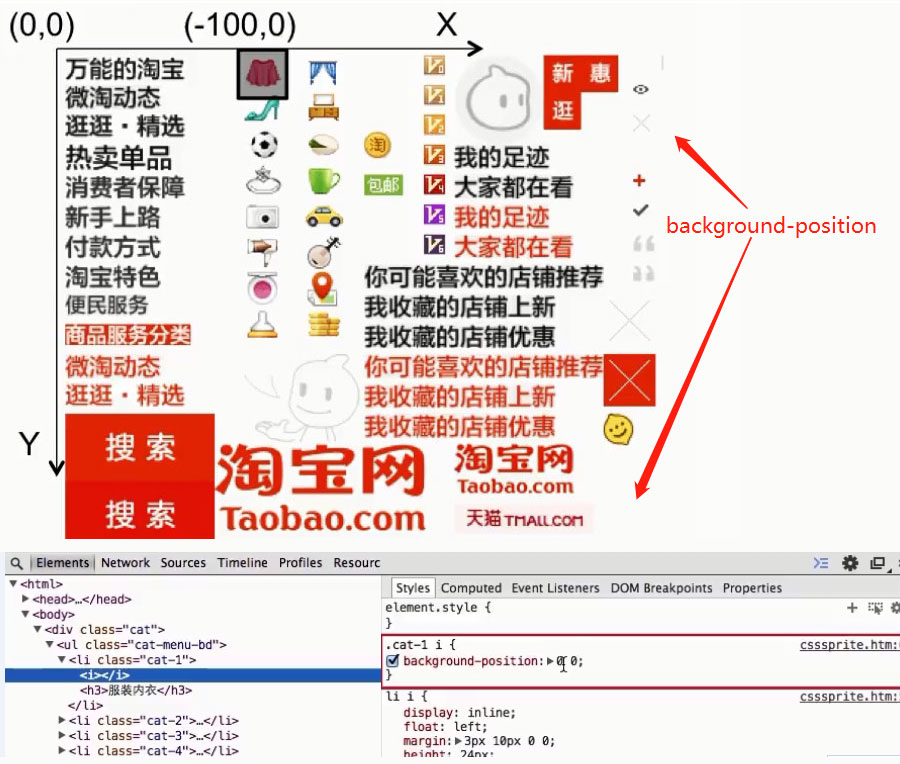
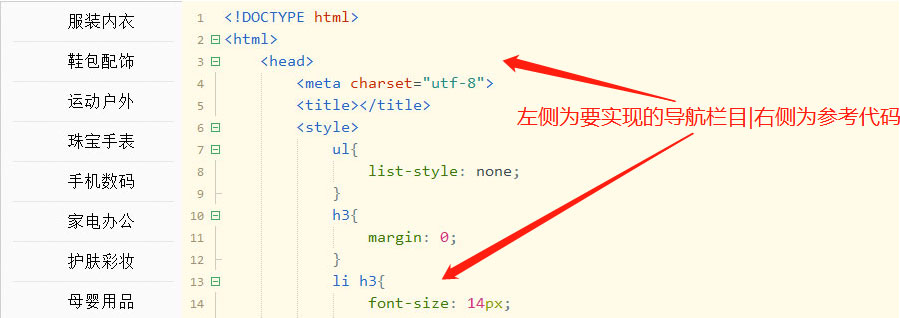
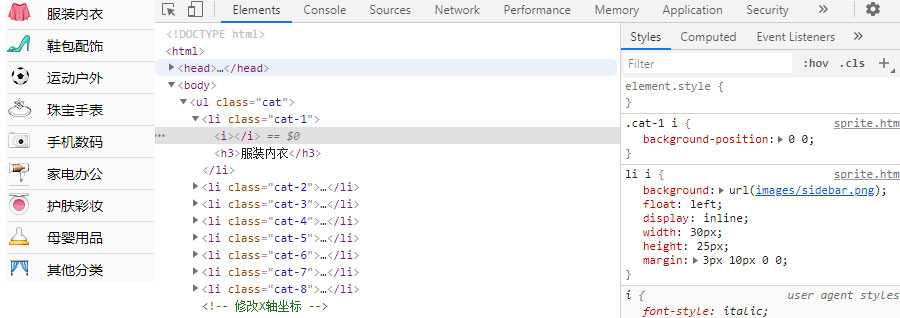

说明:为了减少http请求数量，加速网页内容显示，很多网站的导航栏图标、登录框图片等，使用的并不是
课程目录:
1-1CSS Sprite雪碧图使用场景
1-2CSS Sprite雪碧图实现原理
主要运用css属性background-position,调取对应的坐标
如图:

控制一个层,可显示的区域范围大小,通过一个窗口,进行背景图的滑动.
2-1 CSS Sprite雪碧图实现方式
介绍使用PS手动拼图和使用sprite工具自动生成雪碧图的方法 CssGaga-从下载安装到使用(内附下载地址)
通过简单的导航实例，完成静态页面,讲解如何设置background-position属性来使用css sprite雪碧图
3-1 静态页面实现

3-2 查看案例demo 编程练习
3-3 CSS Sprite 应用

3-4 查看案例demo 编程练习
要实现一个这样登陆框的效果，需要写出完整的HTML和CSS代码
1.注意标签语义化，按钮要使用Button，同时要reset button 默认样式。
2.表单使用form，输入框使用input，表单要使用css美化，例如背景色和边框等。
3.按钮样式要使用雪碧图完成。
编辑挑战(参考代码) 雪碧图实战案例